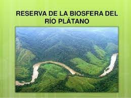

Pagina principal
Animales en Honduras
Parque nacional la tigra
Biosfera del rio platano
Biosfera del rio platano
La Reserva de la Biosfera de Río Plátano está localizada en los alrededores de río Plátano en La Mosquitia, la región en la costa caribeña de Honduras.
La biosfera es la zona más grande de bosque encontrada en Honduras. Esta zona cuenta con una gran biodiversidad de ecosistemas, que van desde pantanos, manglares, bosques de pino, savanas, bosques lluvioso tropical, y los bosques enanos de la reserva. Se pueden observar varias especies de aves, mamiferos y reptiles. Ubicada en la desembocadura del Río Plátano, la reserva es uno de los pocos baluartes de selva tropical que quedan en Centro América y cuenta con una flora y fauna silvestre de gran diversidad. En su paisaje montañoso que desciende hasta la costa del Caribe, más de 2,000 indígenas han conservado su forma de vida tradicional.
Cuatro grupos indígenas habitan el Río Plátano; Garifunas, Misquitos, Pech y Sumo (tawakas). Los garifunas son una mezcla de africanos con indigenas del caribe, los miskitos son una mezcla de garifuna con indigenas misquitos (pech y tawakas) mientras que los pech (300 habitantes) y tawakas (800 habitantes) mantienen sus comunidades con su tradicional estilo de vida en las remotas regiones de la biosfera, en un total se pueden mencionar un total de 8000 habitantes sin tomar en cuenta los que viven adentro en la montaña. Cabe destacar que el grupo étnico más numeroso es el de los miskitos.
